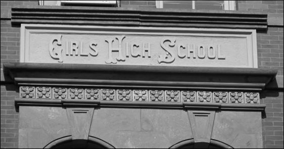
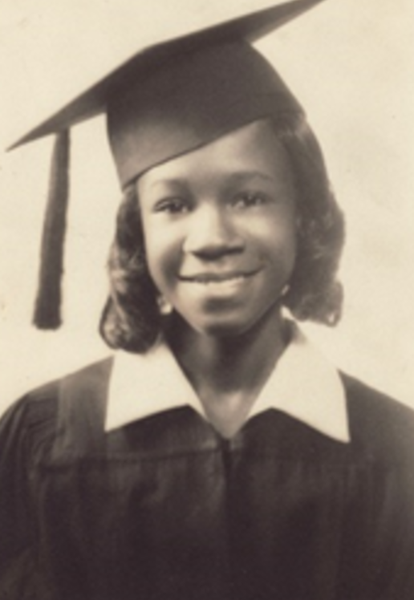
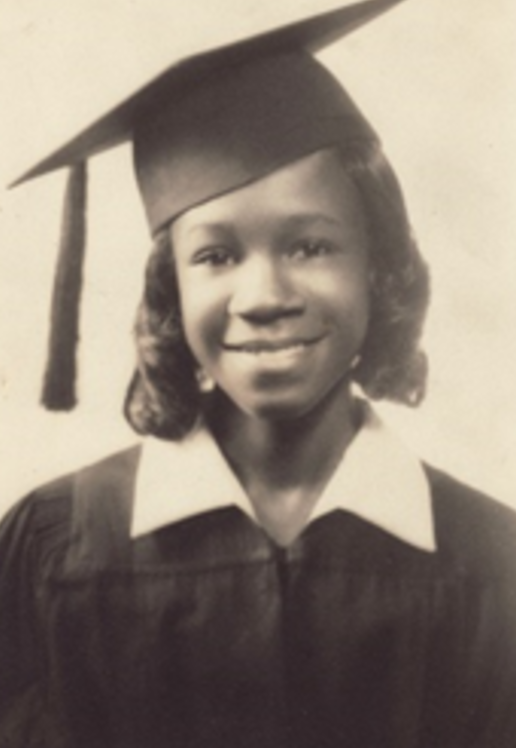

Paths to Power

Digitized Archival Materials

 

A portrait of Shirley Chisholm on her graduation day in 1942.
Digitized on November 10, 2024.
Source: https://findingaids.library.nyu.edu/cbh/arc_128_girls_high_school/

1886
Public School
457 Nostrand Ave., Brooklyn, NY
Brooklyn Adult Learning Center
Center for Brooklyn History
Site Address :
Contributor :
Year Built :
Historic Uses :
Current Uses :
Get in touch with the organization that contributed stories and archival information to this page! This organization can be reached at email@gmail.com.

Brooklyn Girls High School
Image Source: https://6tocelebrate.org/site/the-girls-high-school/
The Paths to Power project gives grants to organizations looking to digitize and preserve their vast histories. More information about grants can be found here.
Activists